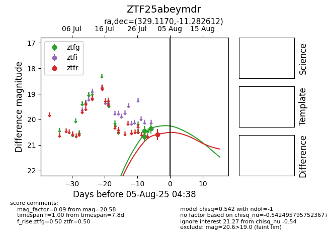

Target ZTF25abeymdr at 2025-08-05 04:38, see:
FINK: fink-portal.org/ZTF25abeymdr
Lasair: lasair-ztf.lsst.ac.uk/objects/ZTF25abeymdr
ALeRCE: alerce.online/object/ZTF25abeymdr
alt names
ZTF25abeymdr (ztf,fink)
coordinates:
equatorial (ra, dec) = (329.1170,-11.28261)
galactic (l, b) = (45.3203,-46.03488)
photometry
last ztfg=20.35, ztfr=20.58
3 ztfg, 1 ztfr detections
